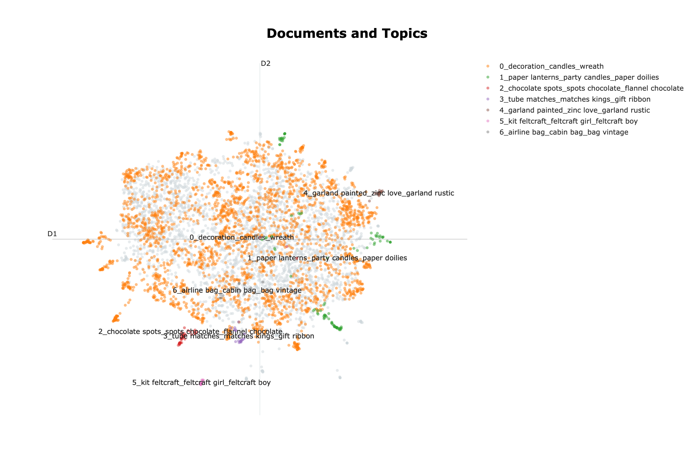
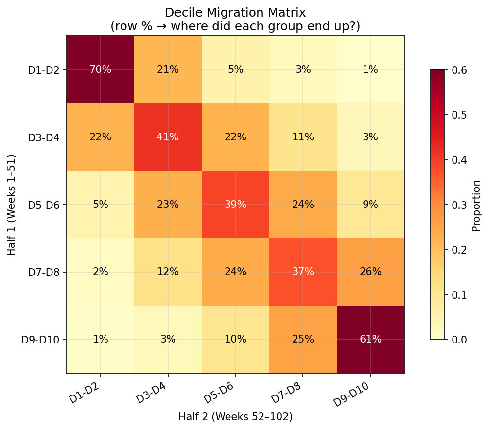

4.1 客户细分
关于中文版
本页是英文版 Marketing Science in Python 的AI翻译。英文版为正式版本，如有出入，以英文版为准。代码、Notebook 和图片中的文字保持英文。 阅读英文版
一个客户细分项目应该产出团队能够投入营销活动的东西。交付物是一个可以直接接入你的 CRM 和广告平台的 segment_id，外加每个细分群体的一份简明简报：他们是谁、为什么重要，以及你的团队应该采取什么行动。
客户细分不是单一的方法。十分位、RFM、K-Means 和基于嵌入向量的聚类各自回答一个不同的问题。这个问题来自细分群体所要支持的决策：谁获得留存预算，哪条信息发给谁，讲哪个产品故事。
按问题选择细分方法
把决策对应到某一行。
| 问题 | 方法 | 输入 | 输出 |
|---|---|---|---|
| 哪些客户现在值得更多关注？ | 十分位 / RFM | 交易日志 | 价值层级或 R/F/M 得分 |
| 价值层级之外还存在哪些行为模式？ | K-Means | 数值型行为特征 | 行为细分群体标签 |
| 客户实际购买的是什么？ | 基于嵌入向量的聚类 | 由产品描述构成的客户文档 | 带关键词指纹的基于含义的细分群体 |
这是三种视角，而不是同一条流水线的三个阶段。后一行不会细化前一行的细分群体；它回答的是另一个问题，有时用的还是另一份数据。从能改变决策的最简单的那一行开始，只有当当前视角一视同仁的两位客户会得到不同对待时，才往下走。本章在同一家食品杂货零售商上构建前两行，即 Dunnhumby 的“The Complete Journey”数据集（2,500 个家庭，为期两年），第三行则构建在一家产品文本适合这种方法的礼品零售商上。
先看行为，再看画像
行为变量描述客户做了什么：最近购买时间、购买频率、消费金额、购买过的品类、产品广度、退货以及对折扣的依赖程度。画像变量描述他们是谁，或者在哪里能触达他们：年龄、收入、家庭构成、地理位置、会员等级、渠道偏好。在行为之上构建细分群体：像“30 多岁的男性”或“高收入人群”这样的标签，对下一次购买的预测能力远不如一个人实际买过什么。之后再引入画像变量，用来描述每个细分群体，并选择在哪里以及如何触达它。
价值层级：十分位与 RFM
最快的细分是一个排名。十分位分析按营收把客户切成十个人数相等的组，食品杂货数据显示出通常的集中现象：最高的两个十分位占了 53% 的营收。

十分位告诉你价值在哪里，当决策是给每位客户多少关注时，这正是你需要的。它对客户为何不同、哪条信息会奏效则一无所言。
RFM 在价值之上加入了参与度，用的是直复营销团队本来就在用的术语：已休眠的高消费客户、新的高频买家。
| 变量 | 定义 | 理想方向 |
|---|---|---|
| 最近购买时间（R） | 距客户上次购买的天数 | 越低越好 |
| 购买频率（F） | 观察期内的购买次数 | 越高越好 |
| 消费金额（M） | 观察期内的总消费 | 越高越好 |
给每个变量按五分位打分并组合起来，昨天刚买过的高消费客户就与沉默了一年的高消费客户区分开了。组合得分最多有 125 个格子，所以要把会得到同样对待的格子合并起来。PyMC-Marketing，也就是 CLV 那一章使用的库，用 rfm_segments() 一次调用就能完成打分。
十分位和 RFM 衡量的是客户买了多少、最近何时买，而不是怎么买。两个 RFM 得分相同的客户，行为可能大相径庭：一个跨许多品类购买全价商品，另一个只在单一品类里买打折商品。
使用 K-Means 的行为细分
要区分这两位客户，就要描述他们是怎么购物的。K-Means 是一种经典的聚类算法，对此依然好用。从 6 到 10 个行为变量开始：在最近购买时间、购买频率和消费金额之外，加入平均订单金额、购物篮大小、品类广度、折扣占比和退货率。用 StandardScaler 对它们做标准化，以免消费金额主导一切。
在缩放之前先对偏态变量做对数变换。消费金额、购买频率、最近购买时间和购物篮大小都严重右偏，而 StandardScaler 只做中心化和重新缩放，所以长尾会保留下来。如果喂入原始特征，K-Means 会把最初几次切分用在区分高消费者和低消费者上，基本上只是复现了价值层级。对偏态特征应用 log1p（一条简单规则：凡是偏度大于约 1 的都做变换）能压缩长尾，这样各个簇就按购买模式而不是消费水平来区分客户。在食品杂货数据上，这正是 K-Means 坍缩成三个价值层级，与把客户群拆成五个均衡的行为群体之间的区别。
选择 K 既要用诊断指标，也要用团队的判断。肘部法则能缩小范围，但很少能确定具体数字，而且在客户数据上，最明显的拐点往往出现在 K=3，这只是重新找回了十分位和 RFM 已经捕捉到的价值层级。推进到 4 到 8 这个实用范围，并让可行动性来决定：保留那个其细分群体你的营销团队会区别对待的 K。

在食品杂货数据上，取 K=5 时，细分群体不仅在消费水平上、也在购买模式上有所区别。图 3 是这次拟合背后的画像：每个细分群体一行，每个行为特征一列，按细分群体均值相对总体的高低着色。

表 3 是分析师对那张热力图的解读，这一步 notebook 留给了你。占比和画像均值来自 notebook（消费、到店次数和部门数是两年总计在细分群体内的平均值）；名称和行动则出自分析师。
| 细分群体 | 占比 | 画像 | 行动 |
|---|---|---|---|
| 重度忠诚客户 | 25% | 消费 $7,300，到店 209 次，17 个部门 | VIP 留存 |
| 高频小篮客户 | 23% | 消费 $3,228，到店 157 次，订单 $24 | 做大购物篮 |
| 偶发大篮客户 | 22% | 消费 $1,938，到店 56 次，订单 $38 | 低成本培育 |
| 折扣倾向客户 | 19% | 消费 $1,087，折扣占比 19%，品类范围窄 | 仅在有利润率护栏时提供优惠 |
| 休眠客户 | 11% | 消费 $334，上次购买在 17 周前 | 做一次低成本再激活，然后停止 |
细分群体的名称只是速记；营销团队依据的是画像和行动两列。这就是要交给他们做下文可行动性检查的表。
当产品含义重要时
数值特征描述客户怎么购物，而不是买什么。当决策关乎品类营销、交叉销售或创意时，信号在产品本身之中，因此你需要产品文本。所以本节是一条独立的路线，而不是 K-Means 之后的下一步，而且它运行在不同的数据上。UCI Online Retail II 数据集包含一家英国礼品零售商约一百万条交易，拥有嵌入模型可以读取的自由文本产品描述。
把每位客户的购买历史当作文本来处理：把他们购买过的产品描述拼接成一个字符串（客户文档），然后用嵌入模型把这个字符串转换成一个稠密向量。在这个嵌入空间里，生日蜡烛和派对餐盘之间距离很短，而一把古董茶壶离两者都很远，因此对向量做聚类会按客户买什么而不是花多少钱来分组。例如：
red retrospot cake stand, party bunting, paper cups, birthday candles, cake cases
数值特征把这位客户归入高频、高消费的层级。嵌入向量则把他放在其他派对用品买家的附近。构建客户文档就是对交易日志做一次分组加拼接：
# Keep each customer's top-N products by revenue, then join the descriptions
prod_rev = (
df.groupby(["CustomerID", "Description"])["Revenue"].sum()
.reset_index()
.sort_values(["CustomerID", "Revenue"], ascending=[True, False])
)
top_products = prod_rev.groupby("CustomerID").head(TOP_N)
customer_docs = (
top_products.groupby("CustomerID")["Description"]
.apply(lambda d: ", ".join(d))
.reset_index(name="doc")
)保留每位客户的头部产品而不是完整历史，过滤掉像“Postage”这样出现在每个细分群体中的通用商品，并给任何一次高价购买的权重设上限。这些选择比选哪个嵌入模型更重要。
BERTopic 用一次调用运行流水线的其余部分：本地句子嵌入模型把每个文档转换成向量，BERTopic 对向量做聚类并提取每个簇的区分性关键词。
from bertopic import BERTopic
from sentence_transformers import SentenceTransformer
embedding_model = SentenceTransformer("all-MiniLM-L6-v2") # local, lightweight
embeddings = embedding_model.encode(customer_docs["doc"].tolist())
topic_model = BERTopic(embedding_model=embedding_model)
topics, probs = topic_model.fit_transform(
customer_docs["doc"].tolist(), embeddings=embeddings
)
图 5 展示了 BERTopic 找到的七个主题，关键词直接点出了各个小众群体：派对蜡烛和灯笼、巧克力圆点烘焙器皿、毛毡手工套件、航空风格的包。

关键词指纹没有展示的是客户群在这些主题之间如何分布，而在这份产品目录上，这正是发现所在。把 HDBSCAN 未分配的客户归并回来之后，宽泛主题（装饰、蜡烛、花环）占了 92% 的客户；六个小众主题合计只占约 8%。该 notebook 用 K-Means 把宽泛主题拆成六个子细分群体，但在后一个时间段上重新拟合并不能复现它们：调整兰德指数接近零，而在同一批客户上做 RFM K-Means 约为 0.14。LLM 分配的十二个名称中有九个是同一个家居装饰主题的变体。请把这套细分当作探索来解读，它描述的是这份目录把什么卖给了谁，而 CRM 的 segment_id 仍然放在行为细分上。
关键词也是对 LLM 辅助命名的防线。把任何一个簇，哪怕是随机的簇，喂给 LLM 并要求它给出名称和人物画像，你都会得到一段精致而有说服力的描述。两道防线：
- 先读头部关键词，再看 LLM 的描述。如果你自己看不出清晰的主题，那这个名称就没有数据支撑。
- 拿名称去营销团队那里检验。如果两个细分群体会收到同一个营销活动，那么对这项决策来说，把它们分开几乎没有价值。
你的细分够好吗？
按这个顺序检查三件事：可行动性、稳定性和规模。
可行动性最重要。把细分群体画像展示给你的营销团队，并对每一对细分群体问：他们是否会使用不同的信息、渠道、优惠或频率。如果不会，那么无论聚类指标多好，这套细分都不可行动。常见的原因是一个在所有方面都很平均的细分群体；把它与相邻群体合并，或重新审视你的变量选择。
第二项检查是稳定性。在两个不重叠的时间段上重新运行细分，检查客户是否大多落在相同的细分群体中；调整兰德指数（ARI）为此给出了一个数字。在食品杂货数据上，notebook 检查的是价值排名而不是簇：它把家庭放进每一年的营收五分位，并追踪它们的去向。

最高和最低五分位大多保持不变（70% 和 61%），而中间三个五分位只有约 40% 保持不变，因此建立在客户群中部的营销活动需要留出最多的余地。这说明的是价值排名有多稳定，而不是五个细分群体有多稳定。在第二个时间段上重新拟合 K-Means，是 segment_id 驱动营销活动之前要做的检查。
第三项检查是规模。每个细分群体都应大到足以据此行动，但不存在通用的底线。对于宽泛的定向，这通常意味着客户群的 10% 左右；一个真正高价值的小众群体可以是有意为之的例外。
从细分群体到 segment_id
离开项目的产出是每位客户一行。配套 Notebook 把 2,500 行写入 segment_assignments.csv，下面列出其中三行，CLV 那一章会关联这个文件，为每个细分群体赋予价值。
| household_key | decile | km_segment | Segment |
|---|---|---|---|
| 1 | D3 | 0 | 高频小篮客户 |
| 2 | D6 | 3 | 偶发大篮客户 |
| 3 | D5 | 4 | 折扣倾向客户 |
把每个细分群体的简报放在文件旁边，并给文件做版本管理：在营销活动之间悄悄变化的归属比没有归属更糟。细分群体描述的是客户之间的差异；它们并不能证明某条信息对其中某个群体有效。一旦选定了处理方式，就去测试它：A/B 测试设计中的方法对细分群体营销活动同样适用，与任何其他营销活动无异。
配套 Notebook：sec4.1_traditional_segmentation.ipynb 在 Dunnhumby 数据上复现十分位、RFM、K-Means 和导出。在 GitHub 上查看
sec4.1_semantic_segmentation.ipynb 在 UCI Online Retail II 上复现客户文档、BERTopic 拟合、稳定性检查和 LLM 命名。在 GitHub 上查看
要点
- 按细分所服务的决策来选择细分方法。十分位和 RFM 给价值排名，K-Means 找出行为群体，嵌入向量捕捉客户买什么；后一种方法回答的是另一个问题，并不细化前一种方法的细分群体。
- 从行为出发构建细分群体，先验证可行动性，再验证稳定性和规模。如果两个细分群体会收到同一个营销活动，就把它们合并。
- LLM 会为任何簇生成一个有说服力的名称，包括随机的簇，所以在信任标签之前先自己读一读头部关键词。